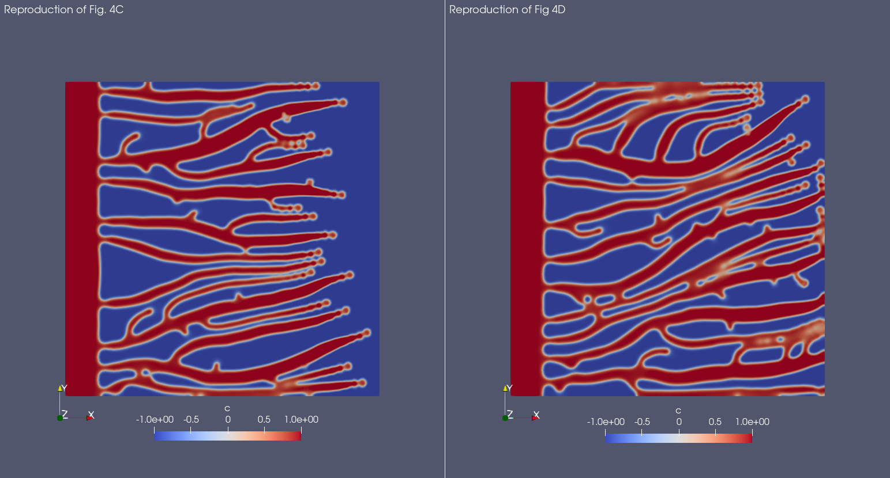

Note
Click here to download the full example code
Save simulations meta-data 2
Often phase field models are simulated using different parameters. However, managing different parameters values, simulation outputs, and other meta-data might be not trivial and can lead to mistakes and repeated simulations.
For this reason Mocafe provides tool to make simulation management easier. To see this in action, we are going to simulate the Angiogenesis models presented in this demo for different parameters values.
Table of Contents
How to run this example on Mocafe
Make sure you have FEniCS and Mocafe installed and download the source script of this page (see above for the link). Then, simply run it using python:
python3 multiple_angiogenesis_simulations.py
However, it is recommended to exploit parallelization to save simulation time:
mpirun -n 4 python3 multiple_angiogenesis_simulations.py
Notice that the number following the -n option is the number of MPI processes you using for parallelizing the
simulation. You can change it accordingly with your CPU.
Visualize the results of this simulation
You need to have Paraview to visualize the results. Once you have installed it,
you can easly import the .xdmf files generated during the simulation and visualize the result.
Implementation
The simulated model is the same of the Angiogenesis 2D demo, so most of
the code would be just the same. Thus, we created a convenience method that will do most of the work
for us, called run_angiogenesis_simulation:
def run_angiogenesis_simulation(loading_message, parameters, data_folder)
...
This method contains basically an adapted version of the code we saw in Angiogenesis 2D demo and thus we skip a full explanation in this demo. Still, you can see the complete implementation in the Full Code section.
Notice that run_angiogenesis_simulation takes just three arguments:
loading_message: just a string containing a message to display nearby the progress barparameters: the simulation parametersdata_folder: the folder to store the simulation output
Managing multiple simulations
In the Angiogenesis model original paper [TPoireC+11] they simulated the model for several conditions, which are carefully reported in the paper figures:
In Fig. 2 the authors show the model simulation result changing the parameter \(\chi\), which influences the tip cell velocity.
In Fig. 3 the authors show the model simulation result changing the parameter \(\alpha_p\), which influences the proliferation rate of the endothelial cells.
In Fig. 4 the authors show the model simulation result changing the parameter \(T_s\), which influences the angiogenic factor production
Now that we defined the run_angiogenesis_simulation is very easy to do the same in Mocafe. We can simply use the
parameters file available at this link, which contains a set of
parameters value derived from the original publication, and then change the desired value when needed.
First, wre load the parameters (be sure you refer to the correct file position in your file system):
parameters_file = file_folder/Path("demo_in/angiogenesis_2d/parameters.ods")
std_parameters = mpar.from_ods_sheet(parameters_file, "SimParams")
Then, we define all the testing conditions we need as dictionaries. Notice that doing so we are also able to provide a name and a description to each simulated condition.
test_conditions = {
"sim2C": {
"name": "Travasso Fig2C",
"desc": "Simulation reported in Travasso et al. (2011) in Figure 2C. The change in the 'chi' parameter leads "
"to a reduction of the tip cell velocity.",
"parameters_to_change": {"chi": std_parameters.get_value("chi") / 10}
},
"sim2D": {
"name": "Travasso Fig2D",
"desc": "Simulation reported in Travasso et al. (2011) in Figure 2D. The tip cell velocity is normal.",
"parameters_to_change": {"chi": std_parameters.get_value("chi")}
},
"sim3C": {
"name": "Travasso Fig3C",
"desc": "Simulation reported in Travasso et al. (2011) in Figure 3C. The proliferation rate is low.",
"parameters_to_change": {"alpha_p": std_parameters.get_value("alpha_p") / 2,
"chi": std_parameters.get_value("chi") * 0.625}
},
"sim3D": {
"name": "Travasso Fig3D",
"desc": "Simulation reported in Travasso et al. (2011) in Figure 3D. The proliferation rate is high.",
"parameters_to_change": {"alpha_p": std_parameters.get_value("alpha_p") * 1.34,
"chi": std_parameters.get_value("chi") * 0.625}
},
"sim4C": {
"name": "Travasso Fig4C",
"desc": "Simulation reported in Travasso et al. (2011) in Figure 4C. The angiogenic factor production is low",
"parameters_to_change": {"T_s": 0.7}
},
"sim4D": {
"name": "Travasso Fig4D",
"desc": "Simulation reported in Travasso et al. (2011) in Figure 4D. The angiogenic factor production is high.",
"parameters_to_change": {"T_s": 0.9}
}
}
Finally, we use a for loop to simulate all the conditions defined in the dictionary:
for sim_dict_key in test_conditions:
# get dictionary for simulation
sim_dict = test_conditions[sim_dict_key]
# set data folder for current simulation
data_folder = mansimd.setup_data_folder(
folder_path=f"{file_folder / Path('demo_out')}/multiple_angiogenesis_simulations",
auto_enumerate=True)
# load standard parameters value
std_parameters = mpar.from_ods_sheet(parameters_file, "SimParams")
# and change the parameter according to the simulation
for param in sim_dict["parameters_to_change"]:
std_parameters.set_value(param,
sim_dict["parameters_to_change"][param])
# run simulation measuring execution time
error_message = None
try:
init_time = time.time()
run_angiogenesis_simulation(f"simulating {test_conditions[sim_dict_key]['name']}",
std_parameters,
data_folder)
execution_time = time.time() - init_time
except RuntimeError as e:
execution_time = None
error_message = str(e)
# store simulation meta-data
mansimd.save_sim_info(data_folder,
parameters=std_parameters,
execution_time=execution_time,
sim_name=test_conditions[sim_dict_key]['name'],
sim_description=test_conditions[sim_dict_key]['desc'],
error_msg=error_message)
Result
here you can find the screenshots of the results for each simulation compared with the original results reported by Travasso et al. [TPoireC+11].
Experiment reported in Figure 2 of the original paper
A lower value of the \(\chi\) parameter lead to a lower tip cell velocity, and thus to thicker and less developed vessels. This is clearly visible in the original publication comparing Fig 2C, which is the models simulated with a low \(\chi\) value, with Fig 2D, where the \(\chi\) value is normal. Below you can find a crop of the image reported in the original publication:
{kind=link}
And here is the result with Mocafe (i.e. with the script reported on this page):
{kind=link}
Notice that, even though the result is not exactly the same, the qualitative aspects are preserved. The possible reasons for the differences in the results are many:
not all parameters value are reported in the original publication (e.g. the number of angiogenic factor sources)
the position of the angiogenic factor sources and of the tip cells is random
Experiment reported in Figure 3 of the original paper
A difference in the proliferation rate of the endothelial cells can lead to thicker or thinner vessels. This is shown in Figure 3 of the original publication, where they compared a simulation with a low proliferation rate (3C) and a simulation with an high proliferation rate. Below you can find a crop of the image reported in the original publication:
{kind=link}
And here is the result with Mocafe (i.e. with the script reported on this page):
{kind=link}
Notice that, even though the result is not exactly the same, the qualitative aspects are preserved. The possible reasons for the differences in the results are many:
not all parameters value are reported in the original publication (e.g. the number of angiogenic factor sources)
the position of the angiogenic factor sources and of the tip cells is random
Experiment reported in Figure 4 of the original paper
A difference in the angiogenic factor production by the sources can lead to a sparser or denser network of blood vessels. This is shown in Figure 4 of the original publication, where they compared a simulation with low angiogenic factor production (4C) with a simulation with high angiogenic factor production (4D). Below you can find a crop of the image reported in the original publication:
{kind=link}
And here is the result with Mocafe (i.e. with the script reported on this page):
{kind=link}
In Mocafe the difference is less evident than the one evidenced in the original publication. Still, the blood vessels network reported on the right looks slightly denser than the one on the left. The differences we observe in respect with the original publication are probably due to the number of angiogenic factor sources, that was not reported in the original publication and it is critical for this simulation in particular.
Full code
import fenics
import mshr
import time
from tqdm import tqdm
from pathlib import Path
import mocafe.fenut.fenut as fu
import mocafe.fenut.mansimdata as mansimd
from mocafe.angie import af_sourcing, tipcells
from mocafe.angie.forms import angiogenesis_form, angiogenic_factor_form
import mocafe.fenut.parameters as mpar
# setup MPI
comm = fenics.MPI.comm_world
rank = comm.Get_rank()
# only process 0 logs
fenics.parameters["std_out_all_processes"] = False
# set log level ERROR
fenics.set_log_level(fenics.LogLevel.ERROR)
# get current folder
file_folder = Path(__file__).parent.resolve()
# define convenience method
def run_angiogenesis_simulation(loading_message, parameters, data_folder):
# define xdmf files
file_names = ["c", "af", "tipcells"]
file_c, file_af, tipcells_xdmf = fu.setup_xdmf_files(file_names, data_folder)
# setup mesh
Lx = parameters.get_value("Lx")
Ly = parameters.get_value("Ly")
nx = int(parameters.get_value("nx"))
ny = int(parameters.get_value("ny"))
mesh = fenics.RectangleMesh(fenics.Point(0., 0.),
fenics.Point(Lx, Ly),
nx,
ny)
# define function space for c and af
function_space = fu.get_mixed_function_space(mesh, 3, "CG", 1)
# define function space for grad_T
grad_af_function_space = fenics.VectorFunctionSpace(mesh, "CG", 1)
initial_vessel_width = parameters.get_value("initial_vessel_width")
c_0_exp = fenics.Expression("(x[0] < i_v_w) ? 1 : -1",
degree=2,
i_v_w=initial_vessel_width)
c_0 = fenics.interpolate(c_0_exp, function_space.sub(0).collapse())
mu_0 = fenics.interpolate(fenics.Constant(0.), function_space.sub(0).collapse())
n_sources = int(parameters.get_value("n_sources"))
random_sources_domain = mshr.Rectangle(fenics.Point(initial_vessel_width + parameters.get_value("d"), 0),
fenics.Point(Lx, Ly))
sources_map = af_sourcing.RandomSourceMap(mesh,
n_sources,
parameters,
where=random_sources_domain)
sources_manager = af_sourcing.SourcesManager(sources_map, mesh, parameters)
af_0 = fenics.interpolate(fenics.Constant(0.), function_space.sub(0).collapse())
sources_manager.apply_sources(af_0)
file_af.write(af_0, 0)
file_c.write(c_0, 0)
v1, v2, v3 = fenics.TestFunctions(function_space)
u = fenics.Function(function_space)
af, c, mu = fenics.split(u)
grad_af = fenics.Function(grad_af_function_space)
tipcells_field = fenics.Function(function_space.sub(0).collapse())
grad_af.assign( # assign to grad_af
fenics.project(fenics.grad(af_0), grad_af_function_space) # the projection on the fun space of grad(af_0)
)
form_af = angiogenic_factor_form(af, af_0, c, v1, parameters)
form_ang = angiogenesis_form(c, c_0, mu, mu_0, v2, v3, af, parameters)
weak_form = form_af + form_ang
tip_cell_manager = tipcells.TipCellManager(mesh,
parameters)
jacobian = fenics.derivative(weak_form, u)
t = 0.
n_steps = int(parameters.get_value("n_steps"))
if rank == 0:
pbar = tqdm(total=n_steps, ncols=100, position=1, desc="angiogenesis_2d")
pbar.set_description(loading_message)
else:
pbar = None
for step in range(1, n_steps + 1):
# update time
t += parameters.get_value("dt")
# turn off near sources
sources_manager.remove_sources_near_vessels(c_0)
# activate tip cell
tip_cell_manager.activate_tip_cell(c_0, af_0, grad_af, step)
# revert tip cells
tip_cell_manager.revert_tip_cells(af_0, grad_af)
# move tip cells
tip_cell_manager.move_tip_cells(c_0, af_0, grad_af)
# get tip cells field
tipcells_field.assign(tip_cell_manager.get_latest_tip_cell_function())
# update fields
fenics.solve(weak_form == 0, u, J=jacobian)
# assign u to the initial conditions functions
fenics.assign([af_0, c_0, mu_0], u)
# update source field
sources_manager.apply_sources(af_0)
# compute grad_T
grad_af.assign(fenics.project(fenics.grad(af_0), grad_af_function_space))
# save data
file_af.write(af_0, t)
file_c.write(c_0, t)
tipcells_xdmf.write(tipcells_field, t)
if rank == 0:
pbar.update(1)
# load parameters
parameters_file = file_folder/Path("demo_in/angiogenesis_2d/parameters.ods")
std_parameters = mpar.from_ods_sheet(parameters_file, "SimParams")
# define test conditions as dict
test_conditions = {
"sim2C": {
"name": "Travasso Fig2C",
"desc": "Simulation reported in Travasso et al. (2011) in Figure 2C. The change in the 'chi' parameter leads "
"to a reduction of the tip cell velocity.",
"parameters_to_change": {"chi": std_parameters.get_value("chi") / 10}
},
"sim2D": {
"name": "Travasso Fig2D",
"desc": "Simulation reported in Travasso et al. (2011) in Figure 2D. The tip cell velocity is normal.",
"parameters_to_change": {"chi": std_parameters.get_value("chi")}
},
"sim3C": {
"name": "Travasso Fig3C",
"desc": "Simulation reported in Travasso et al. (2011) in Figure 3C. The proliferation rate is low.",
"parameters_to_change": {"alpha_p": std_parameters.get_value("alpha_p") / 2,
"chi": std_parameters.get_value("chi") * 0.625}
},
"sim3D": {
"name": "Travasso Fig3D",
"desc": "Simulation reported in Travasso et al. (2011) in Figure 3D. The proliferation rate is high.",
"parameters_to_change": {"alpha_p": std_parameters.get_value("alpha_p") * 1.34,
"chi": std_parameters.get_value("chi") * 0.625}
},
"sim4C": {
"name": "Travasso Fig4C",
"desc": "Simulation reported in Travasso et al. (2011) in Figure 4C. The angiogenic factor production is low",
"parameters_to_change": {"T_s": 0.7}
},
"sim4D": {
"name": "Travasso Fig4D",
"desc": "Simulation reported in Travasso et al. (2011) in Figure 4D. The angiogenic factor production is high.",
"parameters_to_change": {"T_s": 0.9}
}
}
# run multiple simulations
for sim_dict_key in test_conditions:
# get dictionary for simulation
sim_dict = test_conditions[sim_dict_key]
# set data folder for current simulation
data_folder = mansimd.setup_data_folder(
folder_path=f"{file_folder / Path('demo_out')}/multiple_angiogenesis_simulations",
auto_enumerate=True)
# load standard parameters value
std_parameters = mpar.from_ods_sheet(parameters_file, "SimParams")
# and change the parameter according to the simulation
for param in sim_dict["parameters_to_change"]:
std_parameters.set_value(param,
sim_dict["parameters_to_change"][param])
# run simulation measuring execution time
error_message = None
try:
init_time = time.time()
run_angiogenesis_simulation(f"simulating {test_conditions[sim_dict_key]['name']}",
std_parameters,
data_folder)
execution_time = time.time() - init_time
except RuntimeError as e:
execution_time = None
error_message = str(e)
# store simulation meta-data
mansimd.save_sim_info(data_folder,
parameters=std_parameters,
execution_time=execution_time,
sim_name=test_conditions[sim_dict_key]['name'],
sim_description=test_conditions[sim_dict_key]['desc'],
error_msg=error_message)
Total running time of the script: ( 0 minutes 0.000 seconds)